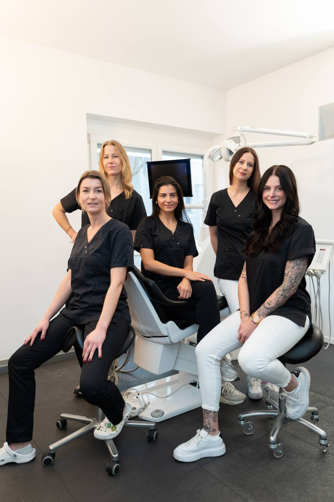
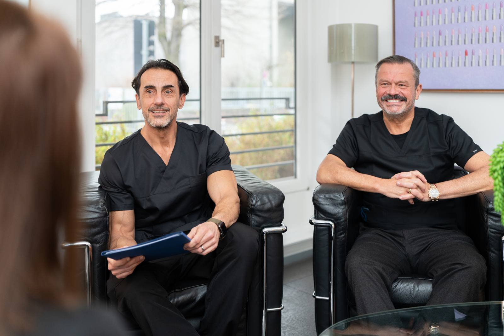

Startseite / Leistungen / Parodontitis
Parodontitisbehandlung in Düsseldorf & Kempen
Parodontitis ist eine der häufigsten Ursachen für Zahnverlust – rechtzeitig behandelt, lässt sie sich gut aufhalten.

Parodontitis ist eine der häufigsten Ursachen für Zahnverlust – rechtzeitig behandelt, lässt sie sich gut aufhalten.
Gerötetes und blutendes Zahnfleisch – je früher behandelt wird, desto besser.
Vorbehandlung, schonende Hauptbehandlung und langfristige Nachsorge.
Die systematische Behandlung ist nach Genehmigung Kassenleistung; ergänzende PZR ist privat.
Parodontitis ist eine bakteriell verursachte, chronische Entzündung des Zahnhalteapparats – also des Gewebes, das den Zahn im Kiefer verankert. Sie beginnt meist als Zahnfleischentzündung (Gingivitis) mit gerötetem, leicht blutendem Zahnfleisch. Bleibt der bakterielle Biofilm bestehen, wandert die Entzündung in die Tiefe: Es bilden sich Zahnfleischtaschen, in denen sich die Bakterien vor Zahnbürste und Speichel geschützt vermehren, und der Körper baut in der Abwehrreaktion Knochen ab. Dieser Verlust ist die eigentliche Gefahr, denn abgebauter Knochen wächst nicht von selbst nach.
Die systematische Parodontitisbehandlung setzt genau dort an: Sie entfernt den Biofilm von den Wurzeloberflächen und schafft Verhältnisse, die Sie selbst wieder sauber halten können. Erbliche Veranlagung spielt eine Rolle; Rauchen, ein schlecht eingestellter Diabetes, Stress, falsche Putztechnik und undichte Füllungen beschleunigen den Verlauf. Anders als bei Karies schmerzt Parodontitis lange nicht – umso wichtiger ist die regelmäßige Kontrolle. Unbehandelt lockern sich Zähne bis zum Verlust, und die Bakterien können über die Blutbahn Herz-Kreislauf-Erkrankungen und rheumatische Beschwerden begünstigen.
Bei akuten Beschwerden wie einem Abszess behandeln wir zuerst die Entzündung und beginnen die systematische Therapie danach. Wichtig zu wissen: Die Behandlung kann den Verlauf stoppen, verlorenen Knochen aber nicht einfach zurückbringen. Ohne konsequente Mundhygiene und Nachsorge kehrt die Erkrankung zurück – Ihre Mitarbeit ist Teil der Therapie.

Salierpraxis Düsseldorf
Salierpraxis Kempen
Je früher eine Parodontitis erkannt wird, desto größer ist der Therapieerfolg – Zahnfleischbluten ist deshalb kein Grund abzuwarten, sondern ein Anlass für einen Termin. Nach der Hauptbehandlung können die Zähne kurzzeitig empfindlicher reagieren und die Zahnhälse etwas freier liegen, weil die Schwellung zurückgeht. Rauchstopp verbessert die Aussichten messbar. Da Parodontitis familiär gehäuft auftritt, ist eine Untersuchung auch für Partner und erwachsene Kinder sinnvoll. Beide Standorte, Düsseldorf-Oberkassel und Kempen, bieten die Behandlung an.
Jede Behandlung wird individuell auf Ihren Befund abgestimmt.
Wir messen die Tiefe der Zahnfleischtaschen an jedem Zahn und erfassen Blutungsneigung und Knochenverlauf. Aus diesem Befund und einer Röntgenaufnahme entsteht Ihr individueller Behandlungsplan.
Alle erreichbaren Beläge werden entfernt und Sie erhalten eine genaue Anleitung für die Reinigung zu Hause. Diese Phase entscheidet mit über den Erfolg, denn ohne saubere Zahnzwischenräume kommt die Entzündung zurück.
Unter örtlicher Betäubung werden die bakteriellen Beläge schonend von den Wurzeloberflächen und aus den Taschen entfernt. Gearbeitet wird mit feinen Handinstrumenten und Ultraschall, meist in einer oder zwei Sitzungen.
Nach einigen Wochen prüfen wir, wie gut das Zahnfleisch abgeheilt ist und wie tief die Taschen jetzt sind. Bleiben einzelne Stellen entzündet, besprechen wir weitere Schritte, in manchen Fällen einen kleinen chirurgischen Eingriff.
Die unterstützende Parodontitistherapie in festen Abständen hält das Ergebnis stabil. Wie oft sie nötig ist, richtet sich nach dem Schweregrad – bei fortgeschrittener Parodontitis engmaschiger als bei einem leichten Befund.
Dauer Vorbehandlung und Hauptbehandlung meist zwei bis vier Termine, die Nachsorge begleitet Sie dauerhaft
Die Entzündung wird gestoppt, bevor weiterer Knochen verloren geht
Zahnfleischbluten und Mundgeruch gehen in der Regel deutlich zurück
Zähne bleiben länger fest und müssen seltener ersetzt werden
Sie lernen konkret, welche Hilfsmittel Ihre Zahnzwischenräume sauber halten
Ein entzündungsfreier Mund ist die Voraussetzung für Implantate und neuen Zahnersatz
Die systematische Parodontitisbehandlung ist bei entsprechendem Befund eine Leistung der gesetzlichen Krankenkassen. Der Ablauf ist gesetzlich geregelt: Nach der Befundaufnahme wird ein Plan bei der Kasse eingereicht, danach folgen Aufklärung, Vorbehandlung, Hauptbehandlung und – abhängig vom Schweregrad – eine mehrjährige unterstützende Nachsorge, die ebenfalls zum Leistungsumfang gehört. Ergänzende Maßnahmen sind Privatleistungen, etwa die professionelle Zahnreinigung, bestimmte Labortests auf Bakterien oder aufwendigere chirurgische Verfahren. Privat Versicherte richten sich nach ihrem Tarif. Was in Ihrem Fall Kassenleistung ist und was nicht, halten wir vor Behandlungsbeginn schriftlich fest.
Die Angaben sind allgemeine Hinweise. Was in Ihrem Fall übernommen wird, hängt vom Befund und Ihrem Versicherungsschutz ab – wir beraten Sie persönlich und halten alles schriftlich fest.
Ist Ihre Frage nicht dabei? Rufen Sie uns gern an – wir nehmen uns Zeit.
Die Parodontitisbehandlung erfolgt unter örtlicher Betäubung und ist dadurch schmerzfrei. In den Tagen danach kann das Zahnfleisch empfindlich sein und die Zähne können auf Kälte reagieren, weil die Zahnhälse freier liegen. Das lässt in der Regel nach; spezielle Zahnpasten für empfindliche Zähne helfen in dieser Phase gut.
Parodontitis lässt sich stoppen und dauerhaft kontrollieren, aber nicht im Sinne einer vollständigen Ausheilung beseitigen – bereits abgebauter Knochen kommt nicht von selbst zurück. Ziel der Behandlung ist, die Entzündung zum Stillstand zu bringen und den erreichten Zustand mit regelmäßiger Nachsorge zu halten. Ohne diese Nachsorge kehrt die Erkrankung erfahrungsgemäß zurück.
Zähne, die durch die Entzündung locker geworden sind, werden nach der Behandlung häufig wieder fester, weil die Schwellung zurückgeht und das Gewebe abheilt. Vollständig ersetzt wird verlorener Knochen dadurch nicht. Bei ausgeprägter Lockerung kann eine Schienung benachbarter Zähne helfen. Wie viel Stabilität zu erwarten ist, sagen wir Ihnen nach der Befundaufnahme.
Zur unterstützenden Nachsorge kommen die meisten Patienten zwei- bis viermal jährlich. Der Abstand richtet sich nach Schweregrad, Mundhygiene und Risikofaktoren wie Rauchen oder Diabetes. Bei stabilem Befund lassen sich die Intervalle verlängern. Diese Termine sind nicht optional: Sie sind der Grund, warum das Behandlungsergebnis über Jahre hält.
Eine professionelle Zahnreinigung reicht bei bestehender Parodontitis nicht aus, weil sie die tiefen Zahnfleischtaschen nicht erreicht. Sie ist ideal zur Vorbeugung und als Begleitung, ersetzt aber nicht die systematische Behandlung der Wurzeloberflächen unter Betäubung. Nach abgeschlossener Therapie ist die regelmäßige Reinigung dann ein wichtiger Baustein der Nachsorge.

Die professionelle Zahnreinigung ist Vorbeugung und wichtiger Baustein der Nachsorge nach der Behandlung.
Mehr erfahren
Ist das Zahnfleisch zurückgegangen, lassen sich freiliegende Zahnhälse mit der Pinhole-Technik minimalinvasiv abdecken.
Mehr erfahren
Erst nach behandelter Parodontitis ist der Kiefer bereit für Implantate, die dauerhaft halten.
Mehr erfahrenHaben Sie Fragen zu dieser Behandlung? Wir laden Sie herzlich zu einem persönlichen Gespräch ein.
Termin vereinbaren